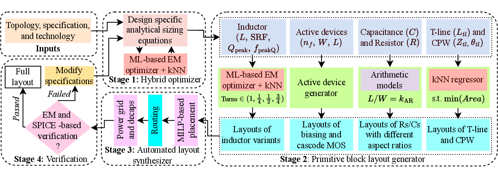

COmPOSER
COmPOSER, short for Circuit Optimization of mm-wave/RF circuits with Performance-Oriented Synthesis for Efficient Realizations, is an open-source automation framework that converts RF and mm-wave performance targets into layout-ready circuit implementations. It is designed for front-end blocks such as low-noise amplifiers and power amplifiers, where gain, noise figure, bandwidth, output power, matching, and stability are tightly coupled to passive geometry and interconnect parasitics.
Unlike a schematic-only optimizer, COmPOSER treats circuit sizing and physical realization as one connected problem. The flow begins with topology, technology, and target specifications; performs hybrid analytical and EM-aware sizing; generates DRC-clean primitive layouts for active devices and passives; then synthesizes placement, routing, pad access, decoupling capacitors, and power delivery so the output is a complete GDSII-oriented layout rather than a disconnected list of component values.
Layout awareness is central to COmPOSER. At RF and mm-wave frequencies, spiral inductors, transmission lines, CPWs, device interconnect, substrate loss, and coupling can dominate performance. COmPOSER therefore combines physics-based active-device equations with machine-learning electromagnetic models for passives, using fast inverse design to choose feasible geometries before layout. Its placement and routing stages then preserve RF-critical intent through constraint-driven optimization rather than leaving parasitics to be discovered only after manual layout.
COmPOSER is also modular. Users can run the end-to-end specification-to-layout flow, or reuse individual pieces such as passive primitive generation, initial LNA/PA sizing, MILP-based placement, A*-based routing, or power-grid construction. That makes the repository useful both as a practical research prototype for automated RF layout generation and as a collection of reusable infrastructure for RF/mm-wave design automation experiments.

What COmPOSER Automates
The framework links specification-driven sizing with layout generation for active devices, inductors, capacitors, resistors, transmission lines, CPWs, routing, pads, decaps, and the power delivery network. In 65 nm LNA and PA evaluations, this end-to-end flow meets post-layout targets with performance comparable to expert manual designs while reducing design turnaround by roughly 100-300x.
Hybrid Sizing
Derives transistor operating points and matching-network targets, then refines passives with ML-based EM inverse design.
Primitive Generation
Turns optimized dimensions into compact layout blocks for MOS devices, inductors, capacitors, resistors, T-lines, and CPWs.
Layout Synthesis
Combines MILP-based placement, routing-input generation, A*-based detailed routing, pad routing, decaps, and PDN creation.
Verification Loop
Closes the flow with EM and SPICE-based post-layout checks followed by targeted refinement when performance misses remain.
Start Here
- Paper Overview explains the COmPOSER method, evaluation results, and how the public repo maps to the full flow.
- Installation covers Python packages, Gurobi, router build, and the mock PDK.
- Quickstart shows the fastest way to run one of the LNA or PA examples.
- Configuration explains the main
config.jsoninterface. - Examples explains what each example file and generated directory means.
- PDN Routing documents rail connectivity, decaps, endpoint handling, and final hierarchy.
- Updates records the complete connected-PDN release and validation status.
Important Notes
The CSV files in DATASETS/ are reference-format datasets. Users should generate their own datasets with the same columns and units expected by the scripts.
TheMODELS/directory is intended to hold trained.pklfiles, but those artifacts are not committed in the repo.
The mock PDK and fixed primitive GDS files are useful for validating the public flow, but they are placeholders rather than production technology assets.